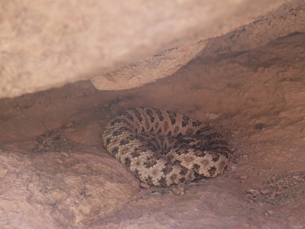
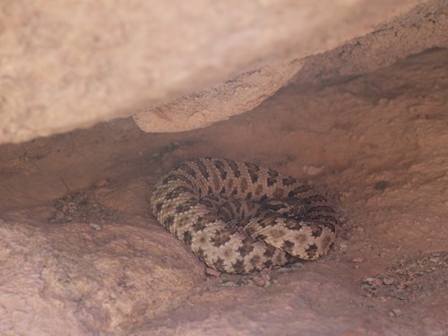

Next Summer Booking Available
Make sure to reserve your date now, we will have limited runs on each river and they go fast. If you have only certain dates that you can get away you should book now!

Highlights
We had an incredible season. We celebrate our 50th year of running trips down the Grand Canyon. This year we ran 36 trips down the Grand Canyon introducing over 800 people to one of our favorite places on earth. We trained 4 new guides and welcomed them to our family. The season started off with some chilly weather in the early season, but our guests braved the cold and loved every minute of their trip. Later the temperatures soared reaching highs of 120 F in the Grand Canyon and 95 on the Salmon. We didn't have any trouble getting people in the water at those temperatures.
Wilderness Encounters
Our trips are all run in some of the most remote areas of the United States. We share these areas with lots of critters both large and small. Here are some tips on what to do if you should find yourself face to face with one.
Scorpions: There are hundreds of varieties of scorpions, most of them being harmless. There are, however, a handful of them that can be dangerous and even potentially lethal. Scorpions can be found in almost every ecosystem and are very adaptable to their environment. The scorpion that calls Phantom Ranch in the Grand Canyon home is the Bark Scorpion, the most venomous in the United States. Do not worry though, the bark scorpions are only lethal to their prey and luckily humans are not on that list!
They spend the day hiding and crawl out at night to hunt. They will eat crickets, moths, spiders and other insects. Many compare their sting to an intense bee sting. Relief can be found with ice, aspirin and times.
 
